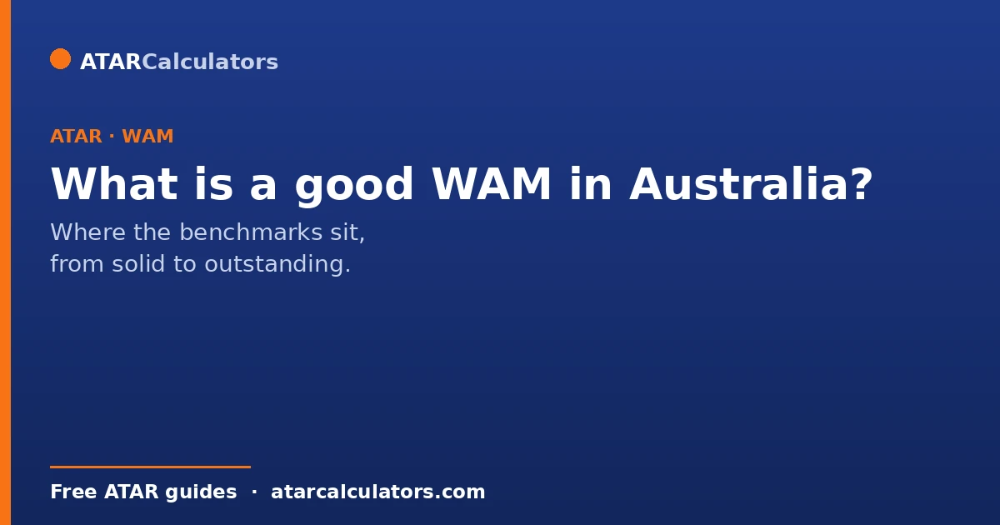
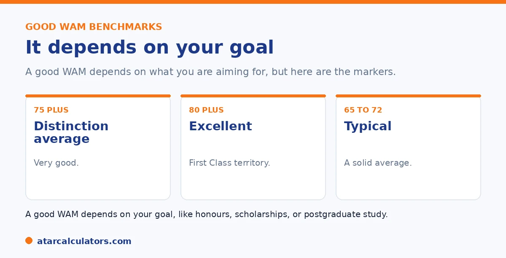

Here is the short version. As a rough guide, a WAM in the high 60s to low 70s is a solid credit-level result. 75 and above is a distinction average and considered very good. 80 and above is excellent and in first-class honours territory, and 85 and above is outstanding, the level that wins scholarships and prizes. These are general benchmarks, and what counts as strong varies by field and university.
A WAM is just a number until you know what it means. The same figure can feel disappointing or excellent depending on what you compare it to.
Below are the benchmarks that help you read your WAM. To work out yours, use our WAM calculator.
Key takeaways
- High 60s to low 70s is a solid credit-level result.
- 75 and above is a distinction average and very good.
- 80 and above is excellent, in first-class honours territory.
- 85 and above is outstanding, the scholarship level.
- Benchmarks vary by field and university.
- A strong WAM opens honours, scholarships, and postgrad study.
The WAM benchmarks
Here is a rough way to read a WAM in Australia. A WAM in the high 60s to low 70s is a solid result, around the credit level. A WAM of 75 or more is a distinction average, which is genuinely very good.

From there, a WAM of 80 or above is excellent, sitting in first-class honours territory at many universities. A WAM of 85 or more is outstanding, the level that tends to win scholarships and prizes.
What's good depends on context
These benchmarks are a starting point, not a rule. What counts as a strong WAM varies by field. In some demanding disciplines, the typical WAM runs lower, so a result that looks modest can be very competitive.
So compare your WAM to others in your own course and university, not a single national figure. A WAM that is average in one field can be excellent in another. See our guide on why a WAM can drop.
Why a good WAM matters
A strong WAM opens doors. It is the main figure used for entry to honours, for scholarships and prizes, and for many postgraduate courses, including competitive ones like graduate-entry medicine and law.
So lifting your WAM is not just about pride. It can directly widen your options after your degree. See our guide on WAM boost strategies.
Want to work out your WAM?
Try the WAM calculator →WAM for honours and beyond
For specific goals, the bar is more defined. First-class honours typically needs a WAM around 80 or above, though the exact threshold varies by university and faculty. Postgraduate courses often set their own WAM requirements.
So if you have a goal in mind, check its specific WAM requirement rather than relying on the general bands. See our guide on WAM requirements for honours.
It helps to know what the common thresholds unlock. This is because a WAM is a gateway to several concrete things. First-class honours (often called H1), the level that most strongly signals research ability, generally sits around a WAM of 80 and above. Second-class honours divides into an upper band (roughly the mid-70s) and a lower band (around 70). And the band you reach can affect entry to research higher degrees and some graduate programs. A WAM near or above 80 also opens doors beyond honours. Competitive graduate schemes, scholarships, PhD entry and admission to postgraduate courses that set a minimum WAM. Below that, a WAM in the 70s is a solid result that keeps most pathways open. The mid-60s and above clears the threshold for many programs even if it is not competitive for the most selective ones. The key point is that these numbers are targets tied to outcomes, not abstract grades. So the useful move is to work backwards. Find the WAM your intended next step needs, then judge your current average against that specific figure rather than a general sense of what sounds good.
If your WAM is lower than you'd like
If your WAM is below where you want it, remember two things. First, it is rarely fixed; later results can lift it, especially as some universities weight later years more. Second, the benchmarks are general, so check what is strong in your field.
A focused effort in your remaining units can move your WAM more than you might expect. See our guide on how to boost your WAM.
Is a WAM of 75 good?
Yes. A WAM of 75 is a distinction average, and widely considered good. It shows consistent, strong performance, and it meets the entry requirement for many honours programs and competitive graduate roles.
For the most selective goals, such as First Class Honours or a competitive scholarship, you may need to push higher, towards 80. But as a general result, a WAM of 75 is a genuinely strong outcome.
WAM for First Class Honours
First Class Honours is usually set at a WAM around 80, though some faculties set it at 75. It is the top honours result, awarded on your honours-year performance, and it is often required for a competitive PhD or research scholarship.
So if First Class is your goal, aim for a WAM around 80 or above, and check your faculty’s exact threshold. See WAM requirements for honours.
It varies by faculty
What counts as a good WAM can vary by faculty. Some disciplines grade more tightly, so averages run lower, while others award higher marks more freely. A WAM that is strong in one faculty may be middling in another.
So judge your WAM against typical results in your own discipline, not just a universal benchmark. If your field grades hard, a slightly lower WAM can still be competitive within it.
Setting a WAM target
Rather than chase a perfect score, set a target based on your goal. For honours entry, aim for a solid credit-to-distinction average; for First Class or a scholarship, aim for around 80. Then work backwards to the marks you need in your remaining units.
A clear target, matched to your goal, is far more useful than comparing yourself to an abstract idea of a good WAM. Because WAM uses your exact marks, every mark you gain moves you towards it.
Common questions
What's a good WAM in Australia?
As a rough guide, high 60s to low 70s is a solid credit-level result. 75 and above is a distinction average and very good. 80 and above is excellent and in first-class honours territory, and 85 and above is outstanding. Benchmarks vary by field.
Is a WAM of 75 good?
Yes. A WAM of 75 or more is a distinction average, which is genuinely very good. It is often the level associated with strong performance, and it opens up honours and many postgraduate options. What is competitive still varies by field.
What WAM do you need for first-class honours?
Typically around 80 or above, though the exact threshold varies by university and faculty. Some set it slightly higher or lower. Check your university's specific honours requirement rather than relying on the general figure.
What's the average WAM?
It varies by field and university, so there is no single national average. In some demanding disciplines, the typical WAM runs lower. So compare your WAM to others in your own course rather than one national figure.
Why does a good WAM matter?
It is the main figure used for honours entry, scholarships, prizes, and many postgraduate courses, including competitive ones. So a strong WAM can directly widen your options after your degree, beyond just reflecting your performance.
See where your WAM stands
Estimate your WAM from your marks and credit points. Free, and no signup.
Open the WAM calculator →Related guides
This guide is general information for students, not formal academic advice. WAM and GPA policies, grade bands and honours thresholds vary by university and faculty, and can change. Failed units, year weighting and which units count are all set by each university. Always confirm with your own university's official grading and WAM policy, such as the University of Sydney or your own institution. Reviewed by the ATARCalculators Editorial Team.